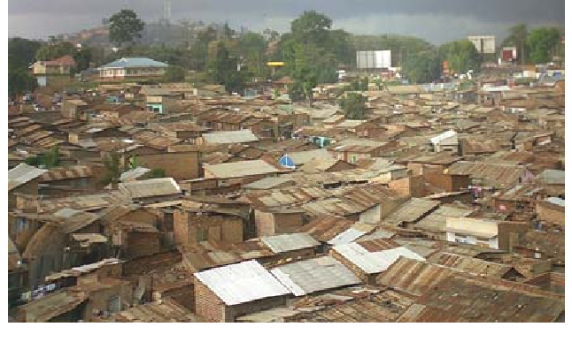
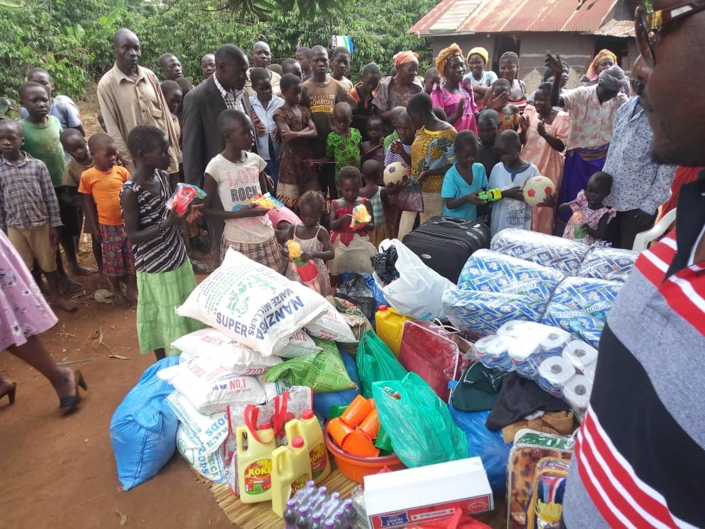
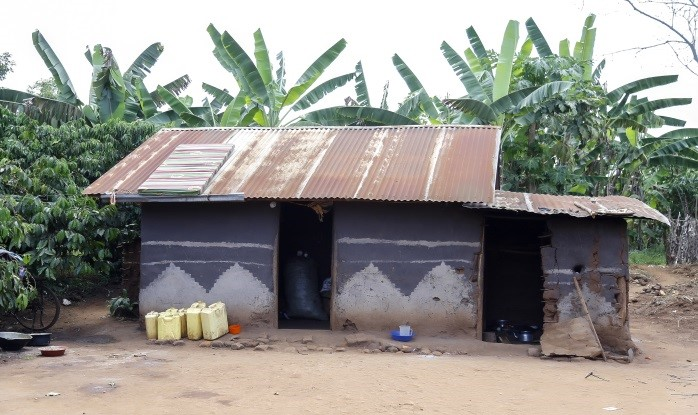
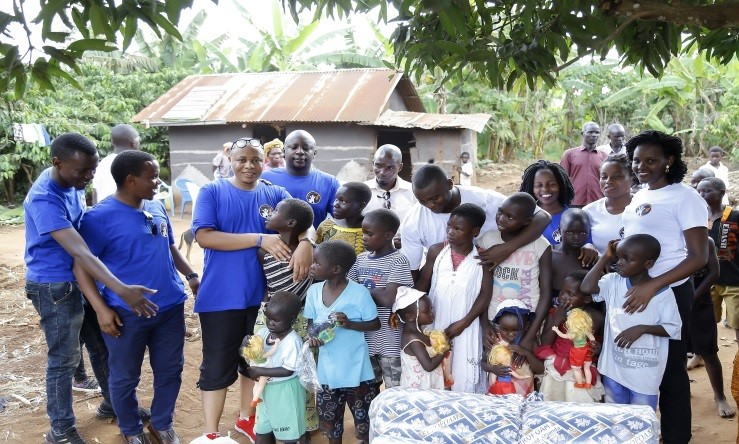
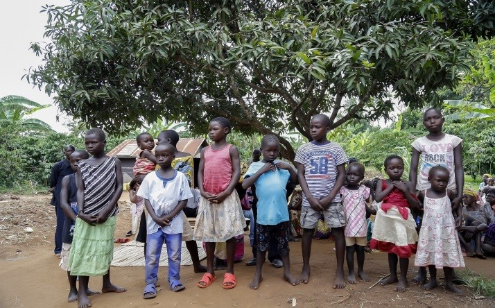

The organization has established a strong foundation for reaching out to the vulnerable groups in the society with two of our livelihood projects in Kayunga. So far overseeing over 5 families with over 30 children inhabitants
· In partnership with Tabitha global care a House, latrine for one family and a community borehole have been constructed.
· Children under this family have access to education with all the scholastic materials.
· We have been able to plant coffee as cash crop that will ensure sustainability of this project.
· We believe that proper livelihood cannot be achieved without Spiritual support and so we have been able to work with church leaders in accordance to support the families
· We have been able extend an outstanding medical facilitation to the three disadvantaged families of which one head of the family is mentally ill and now accessing treatment at Butabika Hospital
The organization has been able to identify a vulnerable group of 50 child prostitutes so far in Bwaise. Depending on the environment there is a possibility of increment in the numbers.
Awad is looking forward to rehabilitate the children and support them spiritually, emotionally and financially

|
Name of client |
Activity details |
|
Kayunga families |
Improving livelihood ensuring education access and provision of basic health in the in Kayunga families . |
|
Mr.kiiza john |
Provision of medical care to the mentally ill head of family in Kayunga |
|
Bwaise Slum area |
Rehabilitation And Skilling Of Young Girls Involved In Child Prosistituton
|
